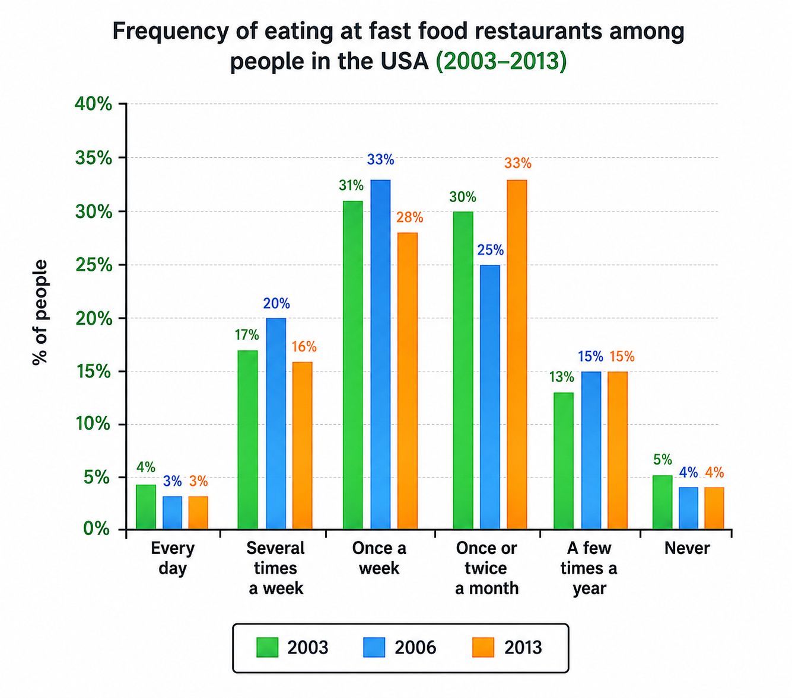

Official Mock Platform. Test your skills under real exam timing.
Complete the notes below. Write ONE WORD AND/OR A NUMBER for each answer.
Example: Start date: 16th May
Opening ceremony (first day)
Other events
Choose the correct letter, A, B or C.
11. When the group meet at the airport they will have
12. The group will be met at Munich Airport by
13. How much will they pay per night for a double room at the hotel?
14. What type of restaurant will they go to on Tuesday evening?
15. Who will they meet on Wednesday afternoon?
What does the man say about the play on each of the following days? Choose FIVE answers from the box and write the correct letter, A–G, next to Questions 16–20.
Days:
16. Wednesday: _____
17. Thursday: _____
18. Friday: _____
19. Saturday: _____
20. Monday: _____
Complete the table below. Write ONE WORD ONLY for each answer.
| Stages of presentation | Work still to be done |
|---|---|
| Introduce Giannetti's book containing a (21) _________ of adaptations | Organise notes |
| Ask class to suggest the (22) _________ adaptations | No further work needed |
| Present Rachel Malchow's ideas | Prepare some (23) _________ |
| Discuss relationship between adaptations and (24) _________ at the time of making the film | No further work needed |
What do the speakers say about each of the following films? Choose SIX answers from the box and write the correct letter, A–G, next to questions 25–30.
Films:
25. Ran: _____
26. Much Ado About Nothing: _____
27. Romeo & Juliet: _____
28. Hamlet: _____
29. Prospero's Books: _____
30. Looking for Richard: _____
Complete the notes below. Write ONE WORD ONLY for each answer.
Past research focused on noise level (measured in decibels) and people's responses.
Noise 'maps'
Problems caused by noise
Different types of noise
What people want
Understanding sound as an art form
We need to know:
Virtual reality programs
Click the button below to open your answer form in a new tab.
Open Listening & Reading FormYou should spend about 20 minutes on Questions 1–15, which are based on Reading Passage 1 below.
A. Agriculture remains the economic backbone of most developing nations, providing employment for up to 70 percent of the labor force and serving as the primary source of food security. However, smallholder farmers in these regions face an unprecedented array of systemic risks. Unlike their counterparts in industrialised countries, who are often protected by state subsidies, comprehensive insurance schemes, and advanced technological infrastructure, farmers in lower-income countries operate on the fringe of economic survival. A single extreme weather event, market fluctuation, or pest infestation can plunge entire communities into severe financial distress and chronic hunger.
B. Chief among these challenges is climate volatility. Rising global temperatures have disrupted historical rainfall patterns, leading to prolonged droughts punctuated by sudden, catastrophic flooding. Because the majority of smallholders rely exclusively on rain-fed agriculture rather than artificial irrigation systems, their crop yields are directly tied to increasingly unpredictable weather cycles. In Sub-Saharan Africa and South Asia, for instance, a two-week delay in seasonal rains can reduce grain yields by up to 30 percent. Furthermore, warmer microclimates have accelerated the expansion of agricultural pests, such as the fall armyworm and desert locusts, which sweep across regions and decimate harvests overnight.
C. Beyond environmental hazards, rural producers are severely constrained by economic and structural hurdles. Price volatility in global commodity markets frequently undermines agricultural viability. Smallholders rarely possess up-to-date market information, forcing them to sell their produce to intermediary traders at below-market rates immediately following harvest—a period when local supply is highest and prices are lowest. This situation is compounded by a lack of adequate storage facilities. Without cold-chain storage or hermetic silos, perishable crops like fruits and vegetables rot rapidly, while grain stores are destroyed by mold and rodents, resulting in post-harvest losses exceeding 40 percent in some regions.
D. Access to capital presents another formidable barrier. Traditional banking institutions generally view small-scale agriculture as a high-risk, low-return endeavor, leading to exorbitant interest rates or outright refusal to extend credit. Without formal loans, farmers cannot invest in high-yield seed varieties, synthetic fertilizers, or modern mechanisation. Consequently, agricultural productivity in developing regions has lagged behind global averages. While agricultural technology has transformed yields in North America and Europe, traditional farming methods remain dominant across much of the Global South.
E. To mitigate these compounding threats, development agencies and governments are championing multi-pronged strategies. Index-based micro-insurance, which pays out automatically when environmental triggers (such as rainfall levels recorded by satellite) are met, is gaining traction as an affordable safety net. Concurrently, mobile technology is bridging the information gap by delivering real-time weather alerts and market prices directly to farmers' phones. Enhancing physical infrastructure—specifically investment in localized solar-powered storage units and climate-resilient road networks—is also critical. Without such systemic interventions, the agricultural sector in developing nations will remain acutely vulnerable to ongoing global environmental and economic shocks.
Do the following statements agree with the information given in Reading Passage 1?
In boxes 1–5 on your answer sheet, write:
1. Industrialised nations typically offer their farmers greater financial safeguards than developing nations do.
2. The majority of smallholder farmers in developing nations use modern artificial irrigation systems.
3. Desert locust infestations have caused more financial damage in South Asia than in Sub-Saharan Africa.
4. Lack of proper storage facilities contributes significantly to crop loss after harvest.
5. Traditional banks are increasingly willing to offer low-interest loans to rural smallholders.
Choose the correct letter, A, B, C, or D.
6. According to Paragraph A, smallholder farmers in developing nations are particularly vulnerable because
7. What happens when farmers lack real-time market information at harvest time?
8. Post-harvest crop losses in developing regions can reach over 40 percent mainly due to
9. Why do commercial banks hesitate to grant loans to small-scale farmers?
10. Index-based micro-insurance differs from standard insurance because payouts are based on
Complete the table below. Choose NO MORE THAN TWO WORDS from the passage for each answer.
| Risk Category | Main Causes / Impact | Potential Solutions |
|---|---|---|
| Environmental | Unpredictable weather, delays in rains, and pest expansion (e.g., fall armyworm). | Development of index-based (11) _________ and mobile weather alerts. |
| Commercial | Selling crops immediately post-harvest leads to (12) _________ prices. | Providing real-time (13) _________ via mobile phones. |
| Infrastructure | Spoilage caused by mold, rodents, and lack of cold chains. | Installation of solar-powered (14) _________ facilities. |
| Financial | High interest rates or refusal of loans by (15) _________. | Expanding accessible micro-credit and state-backed financial aid. |
You should spend about 20 minutes on Questions 16–27, which are based on Reading Passage 2 below.
Paragraph A: The region historically known as the Fertile Crescent, stretching from the Levant through modern-day Iraq to the Persian Gulf, is widely recognized as the birthplace of urban human civilization. Between 10,000 BCE and 3,000 BCE, nomadic hunter-gatherer communities gradually transitioned into sedentary agricultural societies. This fundamental transformation, known as the Neolithic Revolution, was facilitated by favorable post-glacial climatic conditions, abundant wild grains, and native fauna suitable for domestication. As food production stabilized, human settlements grew exponentially in size and social complexity.
Paragraph B: Key to this cultural evolution was the management of water resources. In lower Mesopotamia, situated between the Tigris and Euphrates rivers, rainfall was scant and erratic. However, seasonal river flooding offered a steady supply of nutrient-rich silt. To capitalize on this, early Mesopotamian communities engineered intricate canal systems, dikes, and reservoirs. Constructing and maintaining these large-scale hydraulic works required organized collective labor, which in turn spurred the development of centralized political administration and hierarchical governance structures.
Paragraph C: By 3500 BCE, the southern region of Sumer witnessed the emergence of the world’s first true city-states, including Uruk, Ur, and Eridu. Uruk, at its peak, housed upwards of 50,000 residents—an unprecedented human density made possible by advanced agricultural yields and specialized division of labor. No longer was every citizen required to produce food; instead, artisan classes, metalworkers, priests, and bureaucrats emerged. Monumental architecture, most notably towering stepped temples known as ziggurats, dominated the urban landscape, serving as both spiritual centers and administrative hubs for grain redistribution.
Paragraph D: The management of complex urban economies necessitated a system for record-keeping. Around 3200 BCE, Sumerian administrators devised cuneiform, a wedge-shaped script pressed into wet clay tablets using reed styluses. Initially utilized solely for accounting—tracking livestock, grain inventories, and land transactions—cuneiform evolved over centuries into a sophisticated writing system capable of recording legal codes, diplomatic correspondence, and literary masterpieces such as the Epic of Gilgamesh. Writing transformed knowledge from ephemeral spoken words into permanent, transferable historical records.
Paragraph E: Long-distance trade routes further accelerated Middle Eastern civilisational progress. Lacking indigenous supplies of timber, stone, and precious metals, Mesopotamian city-states established extensive trade networks spanning Anatolia, the Iranian Plateau, the Indus Valley, and Egypt. Scribes recorded export commodities such as woven textiles, sesame oil, and crafted barley products exchanged for lapis lazuli, copper, and cedarwood. These commercial exchanges facilitated not only material wealth but also the cross-cultural dissemination of technological innovations, architectural concepts, and religious traditions.
Paragraph F: Despite their extraordinary achievements, these early civilizations were intrinsically fragile. Environmental degradation, particularly soil salinization resulting from over-irrigation in hot climates, gradually eroded crop yields over generations. Concurrently, competition over fertile land and water rights sparked recurring military conflicts between neighboring city-states. External invasions by pastoral nomadic groups ultimately brought about the collapse of dominant dynasties, though the technological, administrative, and cultural foundations established in the Fertile Crescent survived to shape subsequent Mediterranean and global civilizations.
Reading Passage 2 has six paragraphs, A–F. Choose the correct heading for each paragraph from the list of headings below.
16. Paragraph A: _____
17. Paragraph B: _____
18. Paragraph C: _____
19. Paragraph D: _____
20. Paragraph E: _____
21. Paragraph F: _____
Do the following statements agree with the views/claims expressed in Reading Passage 2?
In boxes 22–27 on your answer sheet, write:
22. The Neolithic Revolution occurred rapidly due to severe climate changes in the Levant.
23. Building extensive irrigation systems forced Mesopotamian societies to create centralized governance.
24. Uruk was the only city-state in southern Sumer that constructed ziggurats.
25. Cuneiform was originally developed for creative literature rather than economic tracking.
26. Mesopotamian city-states had to import basic raw materials like wood and metal due to local scarcity.
27. Soil salinization caused by continuous irrigation played a role in reducing agricultural output.
You should spend about 20 minutes on Questions 28–40, which are based on Reading Passage 3 below.
A. As fresh water scarcity escalates globally, industrial-scale desalination has emerged as a critical technological solution for coastal populations. Among existing technologies, Sea Water Reverse Osmosis (SWRO) accounts for over 60 percent of world operational capacity due to its higher energy efficiency compared to thermal distillation methods. The SWRO process transforms saline ocean water into potable water through a continuous multi-stage treatment sequence designed to protect sensitive filtration media and ensure strict quality compliance.
B. The primary phase of SWRO begins at the ocean intake structure, where raw seawater is drawn into the plant through submerged pipes positioned well off the coastline. To prevent marine organisms and large debris from entering the system, coarse mechanical screens are installed at the intake point. The water then enters the pre-treatment module. Here, chemical coagulants such as ferric chloride are added to aggregate fine suspended particles. The water passes through dual-media sand filters and microfiltration membranes, removing micro-solids, algae, and organic compounds that would otherwise cause biofouling on downstream equipment.
C. Following particulate filtration, the water undergoes chemical conditioning. Dechlorination agents, typically sodium bisulfite, are injected to neutralize residual chlorine, which degrades polymer-based reverse osmosis membranes. Additionally, antiscalants are added to prevent dissolved mineral salts from precipitating onto membrane surfaces. The treated feed water is then passed through security cartridge filters (typically rated at 5 microns) as a final protective barrier against microscopic particulates.
D. At the heart of the SWRO plant is the high-pressure pumping station and membrane assembly. Standard osmotic pressure naturally drives fresh water toward saline solutions across a semi-permeable membrane. To reverse this natural flow, high-pressure pumps apply mechanical pressure—ranging between 55 to 80 bar—exceeding the natural osmotic pressure of seawater. Under this intense force, water molecules are driven through dense polyamide thin-film composite membranes, leaving behind dissolved salts, heavy metals, and bacteria. The result is two distinct streams: purified permeate (fresh water) and highly concentrated brine (reject water).
E. Because driving high-pressure pumps consumes substantial electrical power, modern SWRO facilities incorporate Energy Recovery Devices (ERDs). ERDs capture the hydraulic energy contained within the pressurized brine waste stream and transfer it directly to incoming feed water, reducing total facility power consumption by up to 60 percent.
F. The final stage of the process is post-treatment and remineralization. The fresh permeate emerging from reverse osmosis is slightly acidic and low in mineral content, rendering it corrosive to municipal piping and unsuitable for direct drinking. To rectify this, the water is passed through limestone bed contactors or injected with calcium hydroxide (lime) and carbon dioxide to restore pH balance and add essential minerals like calcium and carbonate. Finally, small doses of chlorine are added for disinfection prior to distribution into the municipal supply grid, while the concentrated brine is diluted and discharged back into the ocean via engineered diffusers.
Label the diagram below. Choose NO MORE THAN TWO WORDS from the passage for each answer.
Answer the questions below. Choose NO MORE THAN THREE WORDS AND/OR A NUMBER from the passage for each answer.
34. What proportion of global desalination capacity is supplied by SWRO?
35. What substance is added during pre-treatment to aggregate fine suspended particles?
36. What harmful condition in RO membranes is prevented by removing organic compounds and algae?
37. What type of pressure must high-pressure pumps overcome to reverse the natural flow of water?
38. What structural material forms the thin-film membranes used in reverse osmosis?
39. By what maximum percentage can Energy Recovery Devices cut total plant electricity consumption?
40. What process adjusts the water's pH balance and mineral content before municipal distribution?
Click the button below to open your answer form in a new tab.
Open Listening & Reading FormYou should spend about 20 minutes on this task.
The chart below shows how frequently people in the USA ate in fast food restaurants between 2003 and 2013.
Summarise the information by selecting and reporting the main features, and make comparisons where relevant.

Write at least 150 words.
You should spend about 40 minutes on this task.
Write about the following topic:
In a number of countries, some people think it is necessary to spend large sums of money on constructing new railway lines for very fast trains between cities. others believe the money should be spent on improving existing public transport.
Discuss both these views and give your own opinion.
Give reasons for your answer and include any relevant examples from your own knowledge or experience.
Write at least 250 words.
Click the button below to open your writing answer form in a new tab.
Open Writing Form